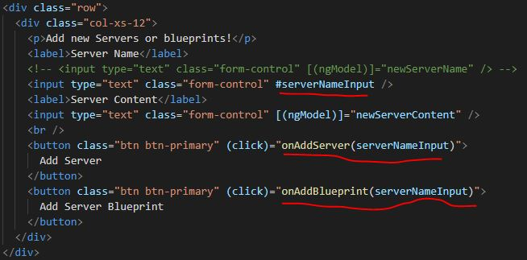
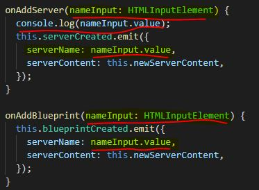

10 - Local Reference
Instead of two-way binding can place a local reference on an element, which can be placed on any HTML element. But reference can only be used in HTML, not in TS.
However, below, #serverNameInput is a local reference only in HTML, but it is passed to TS event binding through onAddServer().
The HTML below comments out the two way binding method for Server Name an dinstead inputs the local reference of #serverNameInput on the form input. This reference is then passed through the onAdd functions to the TS via (click) event
Below, in the TS file, instead of being blank, the functions now receive the argument of nameInput with HTMLInputElement as the type. Console logging nameInput alone will give the full HTMLElement, thus the use of value to get the value inputted in the field.
Also, serverName must now be defined by the value of the local reference, nameInput.value.
